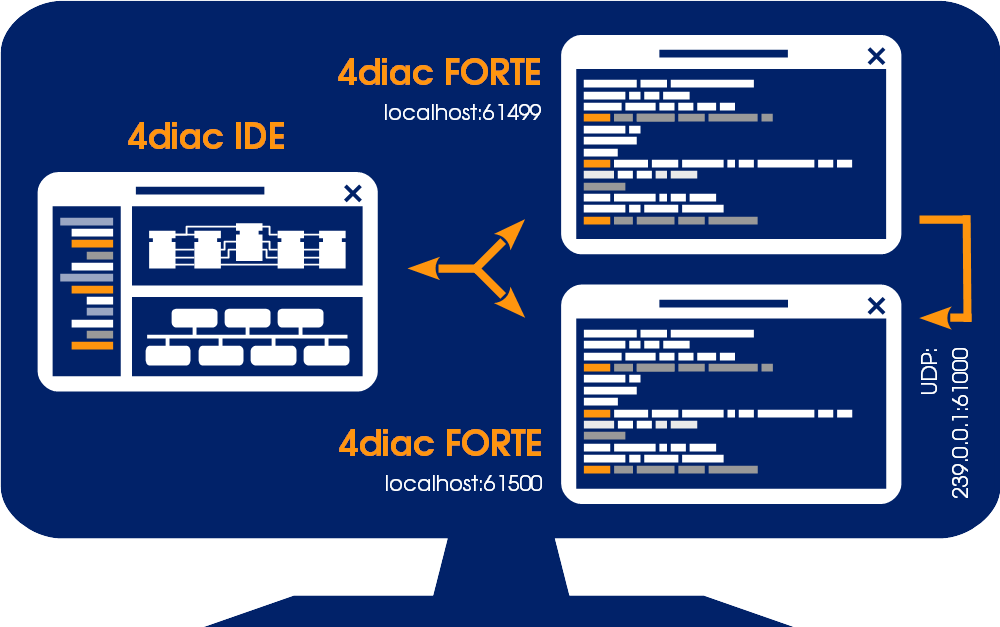
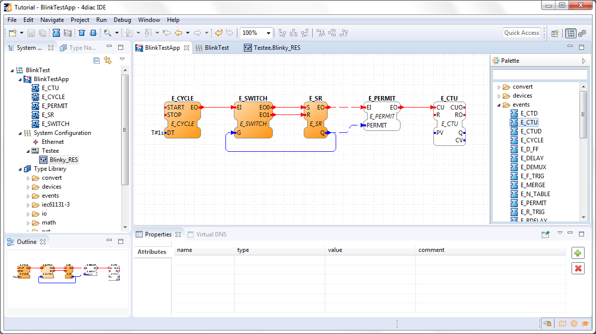
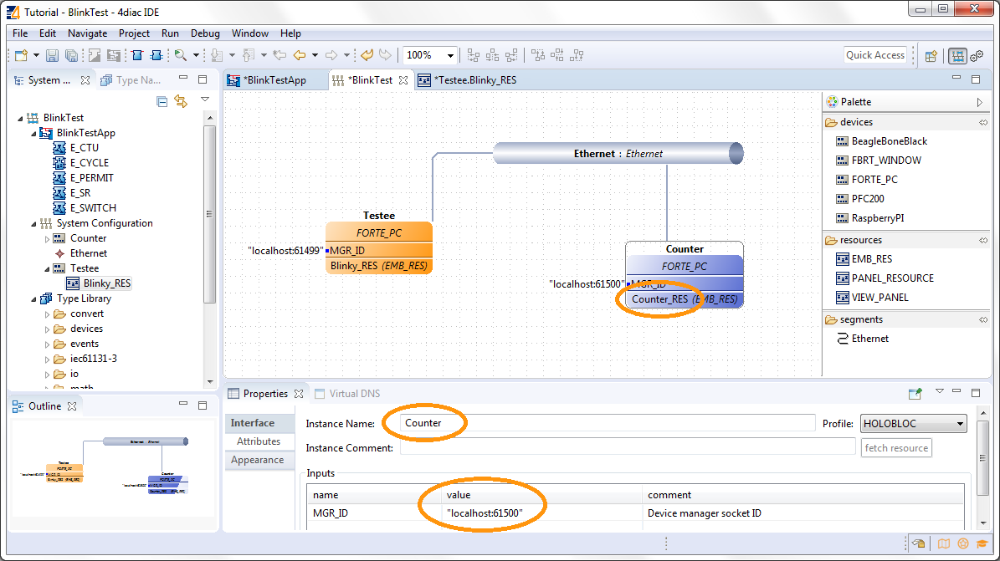
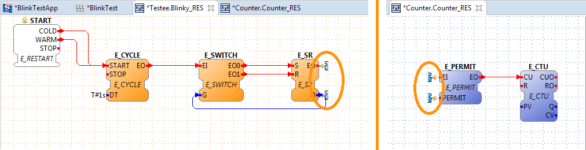
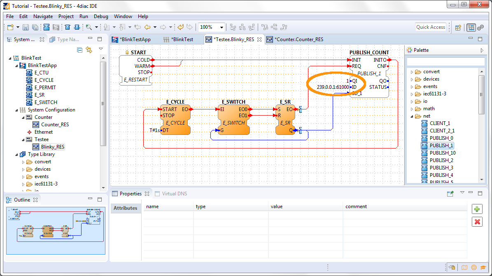
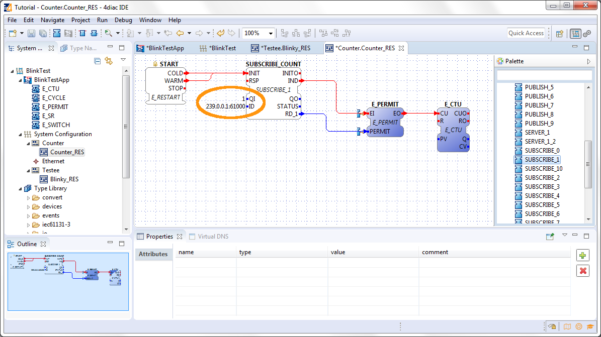
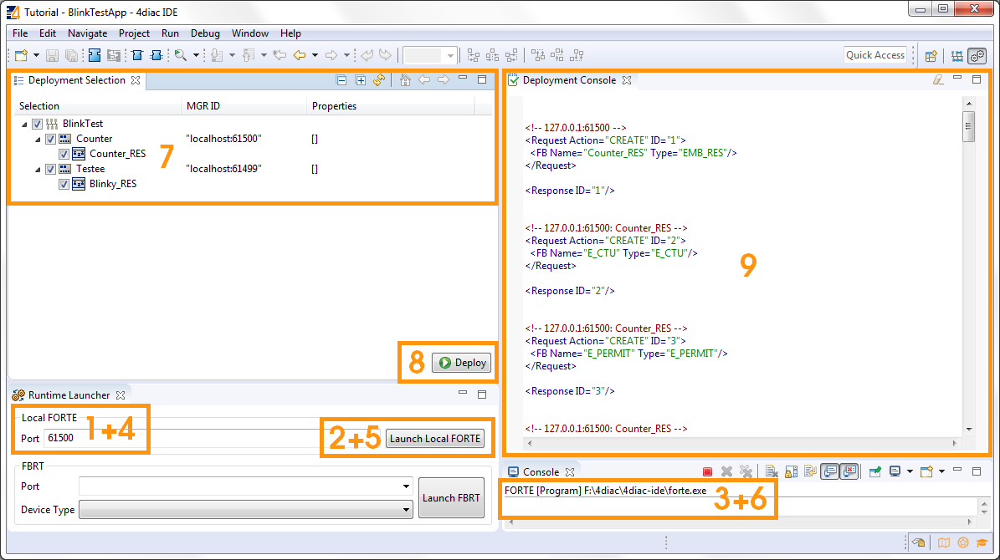

Step 2 - Distribute 4diac Applications
This page is part of a guide that gives a walk-through over the major 4diac IDE features.
-
Distribute 4diac Applications (YOU ARE HERE!)
This guide extends the blinking application of Step 1. We want to count how many times the light has turned on. You will learn how to distribute a IEC 61499 Application to several devices and set up the communication between them. The example continues to run on the local computer. The application will run on 2 devices. The blinking part of the application will run on a 4diac FORTE and the count on another 4diac FORTE, see the architecture below. The two different programs running on the local machine emulate two PLCs.

Extend the Application
To count the blinking, we need to add 2 new Function Blocks (FBs) to the existing Application in the BlinkTestApp Application Editor.
-
Drag and Drop the following FBs from the folder events of the Palette.
-
E_PERMIT -
E_CTU
-
-
Create the connections between the FBs.
Remember, Event and Data connections can not be mixed.

Add Another Device
Change to the BlinkTest System Configuration Editor and add a second device from the Palette. The counter will run on the new device.
-
Drag and Drop a FORTE_PC device next to the existing one.
-
Rename the device to Counter.
-
Set the localhost to 61500. The devices need to have different localhosts, they can not have the same one.
-
Rename the resource to Counter_RES.

Change back to the BlinkTestApp Application Editor and map the two new FBs to the Resource Counter_RES. You can see the dashed connections between the two devices.

Set up the Communication Between Both Devices
Change to the Testee.Blinky_RES or Counter.Counter_RES Resource Editor. There you can see 2 incomplete FBs at the E_SR FB or E_PERMIT. They symbolize the broken connections between the two devices. Currently they have no opportunity to communicate with each other. We fix it by adding special Communications FBs. You can find more information about broken connections here on our Homepage.

Set up the Blinking Part of the Application
Change to the Testee.Blinky_RES Resource Editor.
Drag and Drop a PUBLISH_1 FB from the folder net of the Palette and set up the connections. The PUBLISH FB must be initialized, so it is best to connect its INIT event directly to the START.

Set the QI value to 1 and the set the ID input data of the PUBLISH_COUNT FB to 239.0.0.1:61000.
Set up the Counting Part of the Application
Change to the Counter.Counter_RES Resource Editor.
Drag and Drop a SUBSCRIBE_1 FB from the folder net of the Palette and set up the connections. The SUBSCRIBE FB must also be initialized.

Set the QI value to 1 and the set the ID input data of the SUBSCRIBE_COUNT FB to 239.0.0.1:61000.
Background of the Communication FBs
Here is what the last steps mean. The PUBLISH_X FB is used to send messages over the network which are received by an according SUBSCRIBE_X FB. Every time a REQ is triggered, a message is sent according to the ID input. With the value of the ID input you can specify what specific network protocol you would like to use (e.g., MQTT, OPC UA). If you do not specify a dedicated protocol the default as defined in the "IEC 61499 Compliance Profile for Feasibility Demonstrations" is used. The number X in PUBLISH_X is the number of data elements that you want to send in the message. Since we are only sending one value we used PUBLISH_1.
The used ID value specifies an IP:PORT pair. The used "IEC 61499 Compliance Profile for Feasibility Demonstrations" defines that this is an UDP multi-cast address in a certain address range. The selected 239.0.0.1 and port 61000 have nothing to do with the localhost:61499 or localhost:61500 use for configuring the devices. The first is a UDP multi-cast address use to send messages between devices, and the latter are TCP connections for deploying applications to devices and manage them. Take care of not using the same UDP socket for different PUBLISH_X/SUBSCRIBE_X pairs.
Start Both Devices
Change to the Deployment Perspective.
-
Set the Port to 61499 (the same as defined before, remember localhost:61499 in the System Configuration Editor?).
-
Launch Local 4diac FORTE.
-
You should see the location of your 4diac FORTE and the Terminate button enabled in the Console.
-
Set the Port to 61500 (the same as defined before, remember localhost:61500 in the System Configuration?)
-
Launch Local 4diac FORTE
-
You should see the the location of your 4diac FORTE and the Terminate button enabled in the Console.
-
Select the elements to deploy. For this tutorial select our devices Counter and Testee.
-
Click the button.
-
Check that the Deployment Console shows some output, and that no red warning appears on the right nor left of it. If you get something red, something went wrong.

Where to go from here?
-
In the next step you will see how 4diac FORTE runs in another machine.
Step 3 - Deploy Applications Remotely -
If you want to go back to the original Blinking application without buttons, here’s a link
Step 1 - Use 4diac Locally (Blinking Tutorial) -
If you want to go back to the Start Here page, we leave you here a fast access
Where to Start